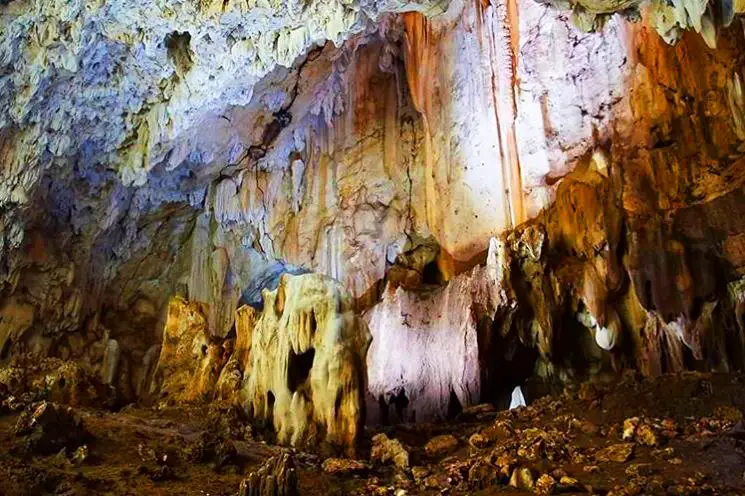

shows that the municipality is an agricultural community.
River
represents the Malanas River which continually and abundantly irrigates the agricultural lands.
History and Government
The town of San Juan was once a Tinguians place belonging to the Inlaud Tribe.
The natives were believed to have come from Indonesia. Before the coming of Spaniards, the natives were believed to have traded with the Indo-Chinese.
They were believed to have bartered with the Indo-Chinese as evidenced by the presence of antique jars, big bowls, gongs, arrows and shields, beads, jewel and gems.
The first man to inhabit the place was a man named Ganagan.
He was born at Nagbayogan and he had brothers named Omnas and Pongdasan.
He was married to Agawa, the sister of Lobigay and Ligaya from a neighboring place called Agpara. He left home and lived independently as his family and descendants grew in number.
During the Spanish Regime, the church was established and many of the people got baptized as Christians. The Spaniards named the place San Juan.
1.Abualan Cave
You may think of this as an ordinary cave because of the narrow entrance.
But beyond this, there are large chambers and columns inside.
Numerous stalactite and stalagmite rock formations can be found. It is somehow similar to Longog cave of Kapangan, Benguet.
According to the locals, the cave provided a safe haven for the residents during World War II.
By the way, it is sometimes called Guano cave because of the presence of bat pooping. Yes, numerous bats dwell here.
Up to this date, however, the cave remains largely undeveloped.
Hopefully, the local authorities will manage it sustainably as it can help in boosting community development.
The cave is now one of the emerging tourist attractions in Abra province.

2.Mangolon san juan
SanSan Juan is a 5th class municipality in the province of Abra, Philippines.
Juan can be reached by passing the towns of Tayum and Dolores. It's a 45 minute to 1 hour drive by jeepney.
The town has two major rivers: the Malanas River and Tineg River. These two rivers supply the townspeople with fish and they are also used to transport bamboos which are sold to resort owners in Vigan, Ilocos Sur.
(photo by Madam Chari Bersamin)